<div> Come From?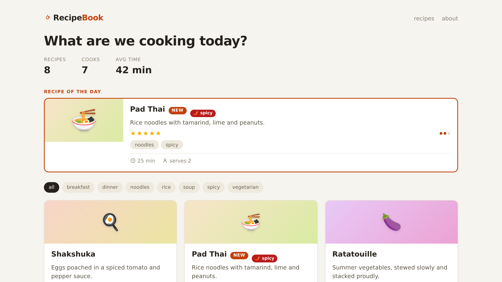
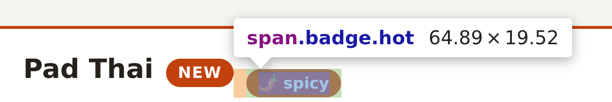
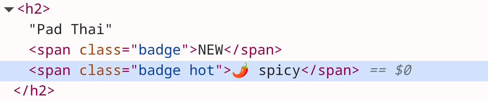
- [:span.badge.hot "🌶 " t])]+ [:span.badge.hot "🌶🔥 " t])]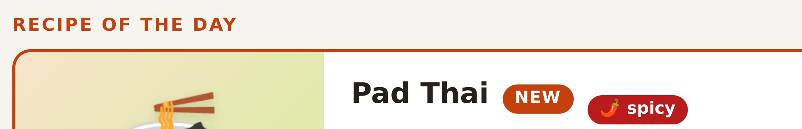
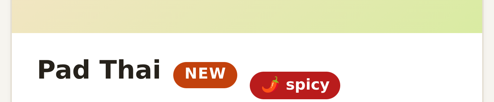
user=> (load-file "src/demo/views.clj")
#'demo.views/layout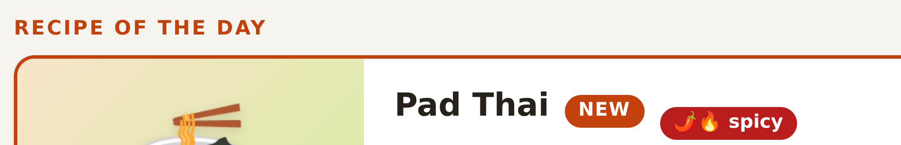
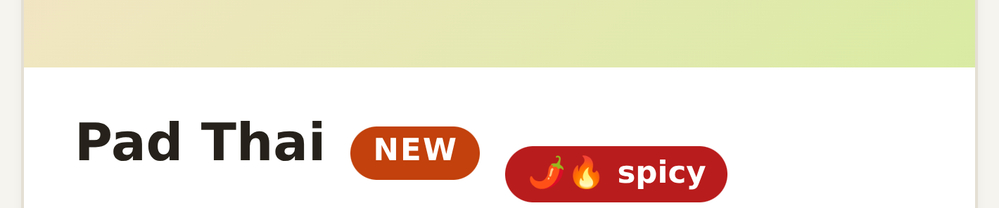
:deps {org.clojure/clojure {:mvn/version "1.12.4"} http-kit/http-kit {:mvn/version "2.8.0"} hiccup/hiccup {:mvn/version "2.0.0"}} :aliases {:nrepl {…}+ :dev {:extra-paths ["dev"]+ :extra-deps {…}} }1(loop [seen (modified-times)]2 (Thread/sleep 200)3 (let [current (modified-times)4 changed (changed-files seen current)]5 (when (seq changed)6 (reload-clojure! changed)7 (socket/notify-reload!))8 (recur current)))notify-reload! when files (sources or resources) changed in the last 200 milliseconds.
1(defn broadcast! [msg]2 (let [s (json/write-str msg)]3 (doseq [ch @clients]4 (http/send! ch s))))5 6(defn notify-reload! []7 (broadcast! {:type "reload"}))sends a reload message to all connected clients
1(defn- dev-body [body]2 (list body3 [:script {:src "/dev/reload.js"}]))(def ^:dynamic *render-boundary* identity) ; seam between app and dev
(binding [views/*render-boundary* dev-body] …) ; wrapper in :dev1ws.onmessage = function (e) {2 var m = JSON.parse(e.data);3 if (m.type === 'reload') location.reload();4};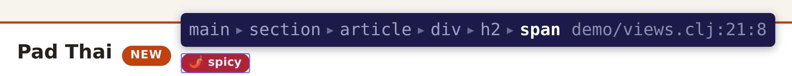
17 [:h2 name18 (when new?19 [:span.badge "NEW"])20 (when-let [t (some #{"spicy"} tags)]21 [:span.badge.hot "🌶 " t])]22 [:p description](hiccup2/html [:span.badge.hot "🌶 " t])<span class="badge hot">🌶 spicy</span> (hiccup2/html {:data-src "demo/views.clj:21:8"} [:span.badge.hot "🌶 " t]) <span class="badge hot" data-src="demo/views.clj:21:8">🌶 spicy</span>(read-string "[:span.badge.hot \"🌶 \" t]")
→ [:span.badge.hot \"🌶 \" t]
(meta …) → nil1(with-open [r (clojure.tools.reader.reader-types/indexing-push-back-reader2 "[:span.badge.hot3 \"🌶 \"4 t]")]5 (-> (clojure.tools.reader/read r)6 (nth 2)7 (#(vector % (meta %)))))8→ [t {:column 17, :end-column 18, :end-line 3, :line 3}]1(defn tr-load!2 [file]3 (let [rdr (rt/indexing-push-back-reader …)4 body …]5 (binding [*ns* *ns*, *file* file, …]6 …7 (doseq [form body]8 (eval form)))))Views load through tr-load!, everything else through load-file.
1(defn tag-tree [node]2 (cond3 (vector? node)4 (let [m (meta node)5 children (mapv tag-tree node)]6 … (assoc attrs7 :data-src (str (:file m) ":" (:line m) ":" (or (:column m) 1))) …)8 (seq? node) (doall (map tag-tree node))9 :else node))(defn dev-body [body] (list (tag-tree body) [:script {:src "/dev/reload.js"}]))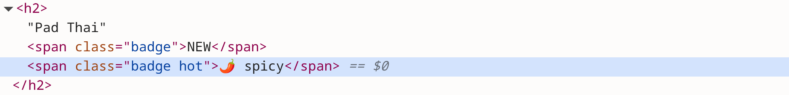
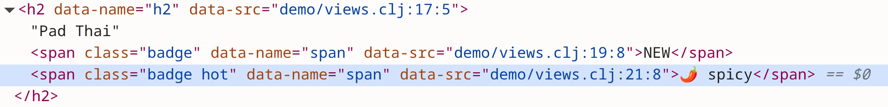
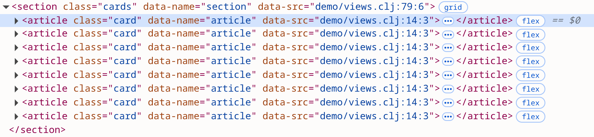
17 [:h2 name18 (when new?19 [:span.badge "NEW"])20 (when-let [t (some #{"spicy"} tags)]21 [:span.badge.hot "🌶 " t])]22 [:p description]demo/views.clj => the click lands on line 21, column 8
1function sendOpen(src) { // src is "file:line:col"2 var p = src.split(':'), col = +p.pop(), line = +p.pop();3 ws.send(JSON.stringify({type: 'open', src: p.join(':'), line, col}));4}1(defn handle-msg! [… msg]2 …3 (case (:type msg)4 "open" (shell/sh "code" "--goto" (str (.getPath file) ":" line ":" col))5 …))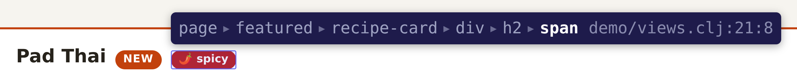
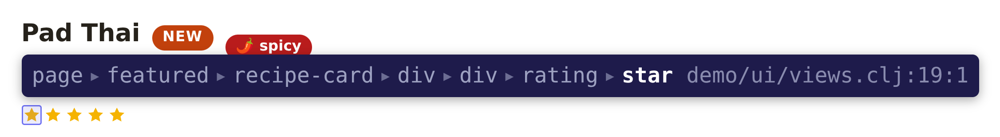
1(doseq [[_ v] (ns-interns (ns-name *ns*))2 :when (and (var? v) (fn? @v))]3 (let [orig (or … @v) ; the plain view fn4 m (meta v)5 src (str (:file m) ":" (:line m) ":" (or (:column m) 1))6 nm (str (ns-name (:ns m)) "/" (:name m))]7 (alter-var-root v (constantly8 … (fn [& args] (tag-hiccup (apply orig args) src nm)) …))))(defn tag-tree [node] … (assoc attrs :data-src (str (:file m) ":" (:line m) ":" (or (:column m) 1))+ :data-name (first (str/split (name (first node)) #"[.#]"))) …)(.onDidChangeTextEditorSelection vscode/window
(fn [_] … (ws-send! {:type "cursor" :file file :line line :col col})))view-index =>
{:name "demo.views/recipe-card" :span [10 1 31 65]} ; the whole defn
{:key "demo/views.clj:14:3" :span [14 3 31 64]} ; [:article.card …]
{:key "demo/views.clj:21:8" :span [21 8 21 33]} ; [:span.badge.hot "🌶 " t]1(defn resolve-cursor [file line col]2 (when-let [{:keys [defns elements]} (get @view-index file)]3 (when-let [d (innermost defns line col)]4 {:component (:name d) ; matches data-name5 :element (:key (innermost elements line col))}))) ; matches data-src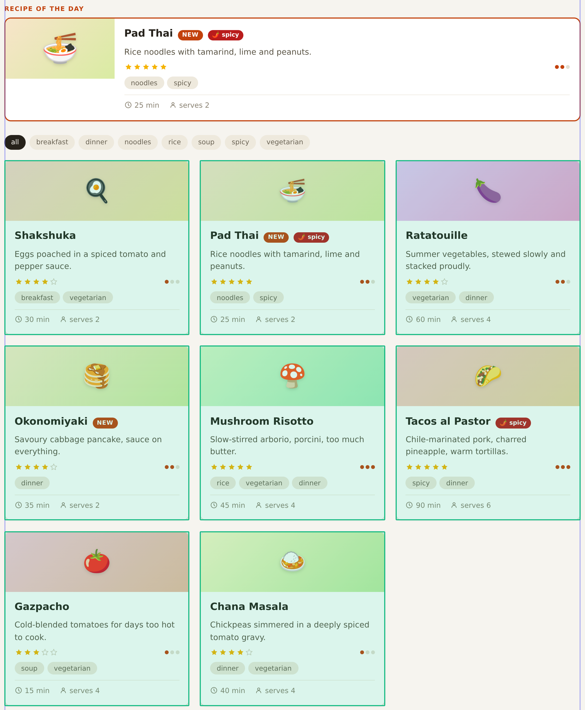
(recipe-card r) @ line 81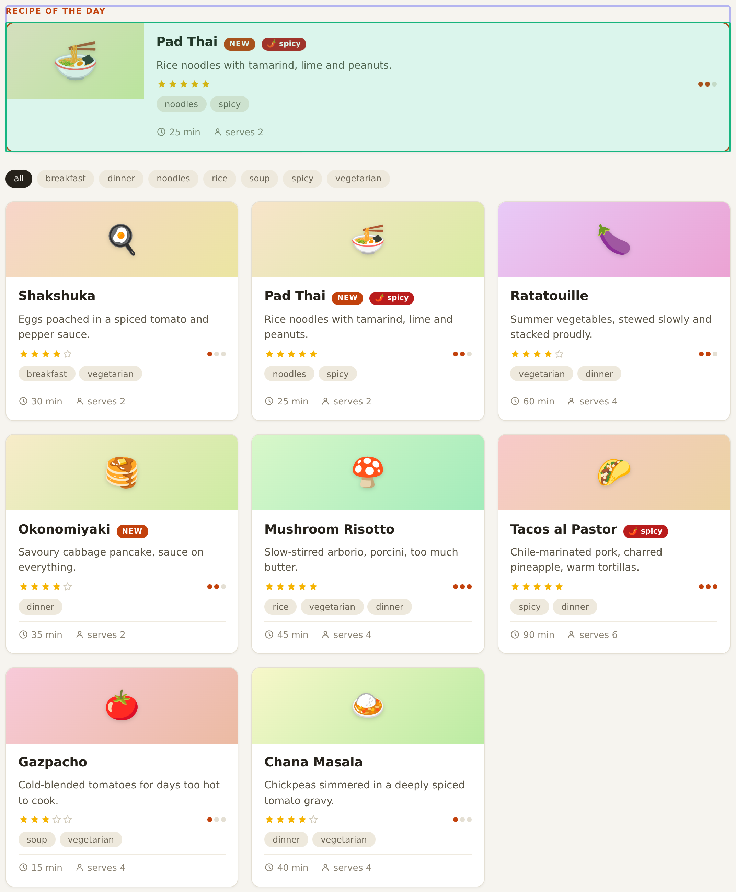
featured's (recipe-card r) @ line 3836 [:section.featured37 [:div.featured-label "recipe of the day"]38 (recipe-card r)])79[:section.cards80 (for [r shown]81 (recipe-card r))]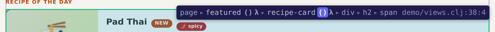
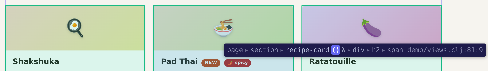
;; during the load, each call to a view fn is rewritten:
(recipe-card r) => (tag-callsite "demo/views.clj:81:9" (recipe-card r))(defn wrap-callsites […]
…
(with-meta ; wrap call and add line/col start + end
(list `tag-callsite (src-key file (form-span form)) walked)
(meta form))
…